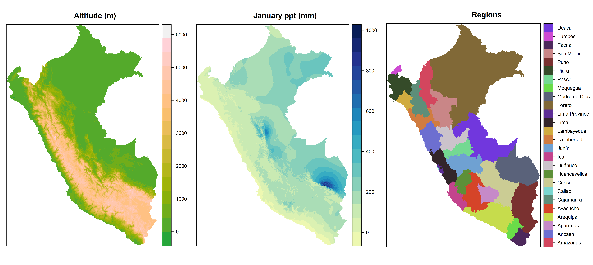

rasterDT uses the fast indexing, aggregation, and assignment operations provided by data.table to power speedy alternatives to several raster package functions. The functions that it provides are between 5 and 25 times faster than the raster package functions that they replace.
Installation
Use devtools to install the current version of rasterDT:
devtools::install_github("JoshOBrien/rasterDT")Usage
rasterDT functions take the same arguments as their raster package equivalents and are designed (with a very few exceptions) to return the same values. Like their raster equivalents, they work with rasters that are too large to hold in memory and (with the exception of fasterizeDT) on RasterLayer, RasterStack and RasterBrick objects.
Because this package leans so heavily on data.table, tabular results are returned as data.tables instead of data.frames. If you would prefer a data.frame, just wrap a data.table object in a call to data.frame().
Performance
Let’s compare the speed of rasterDT functions with their raster package equivalents. To do so using realistic data, first use raster::getData() to download and prepare three raster layers which display the altitude, January precipitation, and political regions of Peru at a resolution of one half arc minute.
(PLEASE NOTE: running the (fully reproducible) code below will download several raster files into the working directory of your current R session.)
library(rasterDT)
library(rasterVis)
library(microbenchmark)
## Altitude in m
altitude <- getData("alt", country = "PER", res = 0.5)
altitude <- crop(altitude, extent(altitude) - c(0, 0.2))
## Political subdivisions (categorical)
regions_shp <- getData("GADM", country = "PER", level = 1)
regions <- fasterizeDT(regions_shp, altitude, field = "NAME_1")
## January precipitation in mm
precip <- getData("worldclim", var = "prec", res = 0.5,
lon = -75, lat = -15)
precip1 <- crop(precip[[1]], regions)
precip1 <- mask(precip1, regions)The three resulting rasters are displayed (using plotting calls not shown here) in the figure below:

Next, to estimate the degree of speedup gained by using each rasterDT function relative to its raster package equivalent, we benchmark pairs of functions, executing equivalent calls 5 times and comparing the average timings:
freqDT() vs. freq(): ~6x speedup
microbenchmark(freqDT = freqDT(altitude),
freq = freq(altitude),
times = 5)
## Unit: milliseconds
## expr min lq mean median uq max neval cld
## freqDT 358.1587 373.9958 402.0715 375.5939 404.4736 498.1357 5 a
## freq 2481.5614 2570.1578 2583.9395 2605.2673 2611.1084 2651.6024 5 b
out_freqDT <- freqDT(altitude)
out_freq <- freq(altitude)
crosstabDT() vs crosstab(): ~6x speedup
microbenchmark(crosstabDT = crosstabDT(altitude, regions),
crosstab = crosstab(altitude, regions),
times = 5)
## Unit: milliseconds
## expr min lq mean median uq max neval cld
## crosstabDT 934.0795 934.6892 1028.893 979.0466 1147.490 1149.160 5 a
## crosstab 6274.8551 6430.1598 6439.387 6454.1255 6509.927 6527.869 5 b
out_crosstabDT <- crosstabDT(altitude, regions)
out_crosstab <- crosstab(altitude, regions)
zonalDT() vs zonal(): ~11x speedup
microbenchmark(zonalDT = zonalDT(altitude, regions, min),
zonal = zonal(altitude, regions, min),
times = 5)
## Unit: milliseconds
## expr min lq mean median uq max neval cld
## zonalDT 200.5657 204.6846 206.6882 207.9012 209.0513 211.2381 5 a
## zonal 2195.7178 2199.3366 2242.2448 2219.9958 2266.3005 2329.8735 5 b
out_zonalDT <- zonalDT(altitude, regions, min)
out_zonal <- zonal(altitude, regions, min)
subsDT() vs subs(): ~23x speedup
dict <- zonalDT(altitude, regions, min, na.rm = TRUE)
microbenchmark(subsDT = subsDT(regions, dict),
subs = subs(regions, dict),
times = 5)
## Unit: milliseconds
## expr min lq mean median uq max neval cld
## subsDT 250.4851 254.4848 356.3356 259.0266 293.7392 723.9421 5 a
## subs 8077.3643 8086.8702 8167.4095 8184.9779 8186.2390 8301.5961 5 b
out_subsDT <- subsDT(regions, dict)
out_subs <- subs(regions, dict)
fasterizeDT() vs rasterize(): ~25x speedup
## rasterize()'s field= argument can handle factor but not character vectors
regions_shp$NAME_FAC <- factor(regions_shp$NAME_1)
microbenchmark(fasterizeDT = fasterizeDT(regions_shp, altitude, field = "NAME_FAC"),
rasterize = rasterize(regions_shp, altitude, field = "NAME_FAC"),
times = 5)
## Unit: milliseconds
## expr min lq mean median uq max
## fasterizeDT 48.09048 49.00721 107.8917 51.78699 52.29528 338.2786
## rasterize 2693.34767 2734.66681 2748.1537 2763.89009 2771.21738 2777.6464
out_fasterizeDT <- fasterizeDT(regions_shp, altitude, field = "NAME_FAC")
out_rasterize <- rasterize(regions_shp, altitude, field = "NAME_FAC")